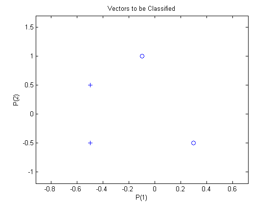
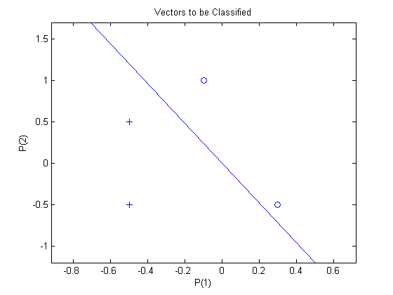
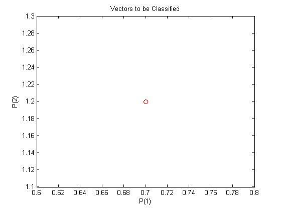
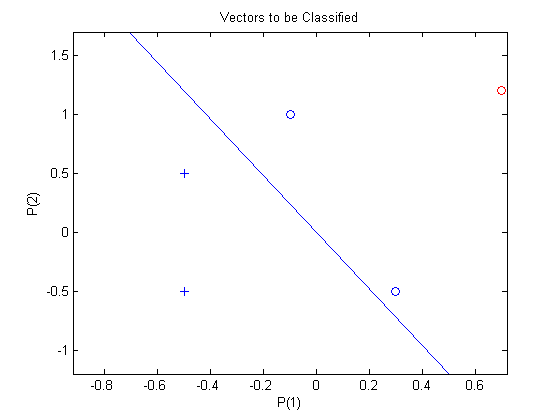

Classification with a 2-Input Perceptron
A 2-input hard limit neuron is trained to classify 5 input vectors into two categories.
Each of the five column vectors in P defines a 2-element input vectors and a row vector T defines the vector's target categories. We can plot these vectors with PLOTPV.
P = [ -0.5 -0.5 +0.3 -0.1; ...
-0.5 +0.5 -0.5 +1.0];
T = [1 1 0 0];
plotpv(P,T);
 The perceptron must properly classify the 5 input vectors in P into the two categories defined by T. Perceptrons have HARDLIM neurons. These neurons are capable of separating an input space with a straight line into two categories (0 and 1).
NEWP creates a network object and configures it as a perceptron. The first argument specifies the expected ranges of two inputs. The second determines that there is only one neuron in the layer.
net = newp([-1 1;-1 1],1);
The input vectors are replotted with the neuron's initial attempt at classification.
The initial weights are set to zero, so any input gives the same output and the classification line does not even appear on the plot. Fear not... we are going to train it!
plotpv(P,T);
plotpc(net.IW{1},net.b{1});
ADAPT returns a new network object that performs as a better classifier, the network output, and the error.
net.adaptParam.passes = 3;
net = adapt(net,P,T);
plotpc(net.IW{1},net.b{1});
 Now SIM is used to classify any other input vector, like [0.7; 1.2]. A plot of this new point with the original training set shows how the network performs. To distinguish it from the training set, color it red.
p = [0.7; 1.2]; a = sim(net,p); plotpv(p,a); point = findobj(gca,'type','line'); set(point,'Color','red');
Turn on "hold" so the previous plot is not erased and plot the training set and the classification line.
The perceptron correctly classified our new point (in red) as category "zero" (represented by a circle) and not a "one" (represented by a plus).
hold on; plotpv(P,T); plotpc(net.IW{1},net.b{1}); hold off;